To do so, every major "feature" was given to a group within our team.
Tasks
Matt, Eric, Roy
Login
Two-factor
Limitations
Sign-up
email
General: Auth
Octa Integration
Maya, Luis, Johnathan
Profile Page
Components
Sherman, Gary
Integrating security feature
Encryption/decryption
User Model
Data Model
Google Key
Aaron, Julia
Test cases
User stories
Add/delete friends
Adding Friends Demo
PeterBook Desktop Demo
PeterBook Mobile Demo
Backend/Encryption of Data Demo
User Stories
Last updated: May 28th, 2018
Key (shorthands for two types of users):
Peter - a casual social network user. Is not very tech savvy. If things are too hard for him, he will just stop using it. He’s not really sure what “privacy” means, so as long as things seem private, he’s happy.
Thomas - casual social network user, but is more savvy than Peter. He’s tech savvy enough to know when things are private, and he would like more control over what he can do on the social network platform.
Wall
As Peter, I want to be able to easily post photos to my friends’ walls, so that I can show off my cat.
As Peter, I want to be able to post photos to my wall, so that I can have personal photos of my cat.
As Peter, I want to be able to delete photos off of my wall, so that I don’t have to see old photos I don’t care about any more.
As Thomas, I want to easily see all my posts to friends, so that I feel more comfortable about having control over my information.
As Thomas, I want to easily delete all my posts to friends, so that I feel like I have more control over my information.
As Thomas, I want to be able to comment on other people’s po.sts, so that I can tell Peter that his cat posts are great
As Peter/Thomas, I want to see my most recent posts on my or other people’s walls, so that I can remember what our most relevant conversations were about.
As Peter/Thomas, I want to be able to search through my posts, so that I can look at past things really easily.
As Peter/Thomas, I want to search through my friends’ list, so that I can find people easily.
As Peter/Thomas, I want to be able to see my friends’ faces when I look for them, so I know that I have the right person
As Peter/Thomas, I want to immediately be able to know when my friends post on my wall or on my comment, so that I can respond back quickly
Settings
As Peter/Thomas, I want to be able to change my username, so that I can be known by the name I feel most comfortable with at the time.
As Peter/Thomas, I want to be able to change my profile picture, so that my friends can easily recognize me.
As Thomas, I want to be able to change my password, so that I can feel secure.
As Thomas, I want to be able to change my email, because AOL sucks now.
As Thomas, I want to be able to get notifications in my email if someone messages me, because I only have a few friends and I really want to keep in touch with them.
As Thomas, I want to be able to turn off notifications in my email, because the messages are getting annoying.
As Thomas, I want to 2-factor authentication because I want to feel secure.
Adding, Removing Friends
As Peter, I want to send my IRL friends a link to the program, so that they are more likely to join me in the network (since it’s hassle-free).
As Peter, I want to not be hassled by people I don’t know, so that I can feel secure and private online.
As Thomas, I want to remove Peter and then have in unable to post or interact with me, so that our breakup is clean.
As Thomas, I want all my posts to see all my posts to Peter if I unfriend him and then friend him again, so that I don’t feel so bad about unfriending him in the first place.
User Flows
Last updated: May 20th, 2018
New User
I should be able to access the site at its URL, and it should greet me with a welcome page that gives me the option to sign up somewhere on it. I should be able to click sign up, and then enter the required information to create a new account. Once I have created my account, it should take me to the homescreen. From this screen I should be able to see my own wall, as well as a list of my friends and a way to add friends. Since I am a new user, I will have no friends added and my wall should be empty. I will click the add friends button, and it will generate a link that I can send to my friends over text / messenger / whatever. Once my friend follows that link and adds me as a friend, I should be able to see them in my friends list. I should be able to click on their name and go to their wall. I should be able to post to their wall, and also respond to anything they post to my wall with comments.
Old User
My device should remember that I was logged in and I shouldn’t have to go through a login sequence, unless I specifically clicked log out. I should be sent to my homepage, where I can see all the posts on my wall, both new and old. I should be able to go to any of my friend’s walls and see all of the posts we’ve made to each other. Some of the posts may be really old, so there should be an option for me to delete them. When I delete them, there should be a sense of security and true deletion, and my friend and I shouldn’t be able to see that content any more.
Mockups
Last updated: May 20th, 2018
Features we know must be implemented:
Posts
Comments
Reactions
Delete old posts
Our Idea for MVP:
One-to-One sharing
Personal Walls
Friends
Add
Delete
Sign-up/login
Two-step authentication
Security
Quick Mockups
Idea 1: Wall
The Wall is the personal page of the user where their friends can post comments, pictures, and other things for the user to see. The user can comment on those posts. The user should also be able to quickly and easily find their friends through the friend-list sidebar to the right.
Idea 2: Possible front page
We wanted to play with the idea of being able to see quickly who updated their posts. That way, the user could see who commented on their wall or on their comments. The page features a large picture of the user, with smaller pictures of friends underneath. The pictures would be ordered (top to bottom, left to right) based on who the user recently interacted with. Each picture would contain a number at the top left representing the number of comments and messages they left for the user.
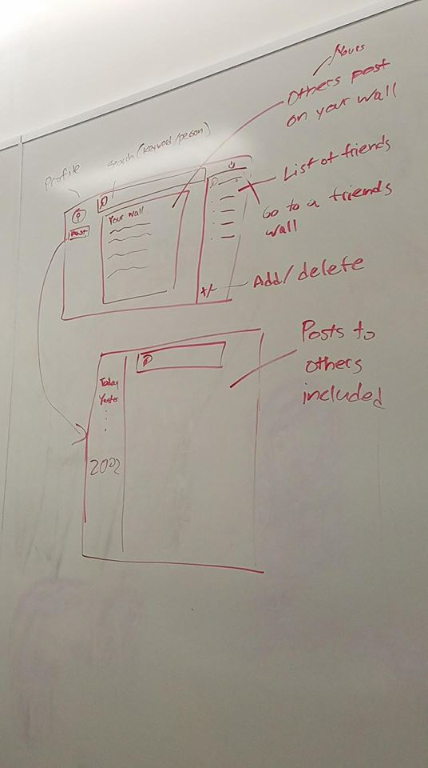
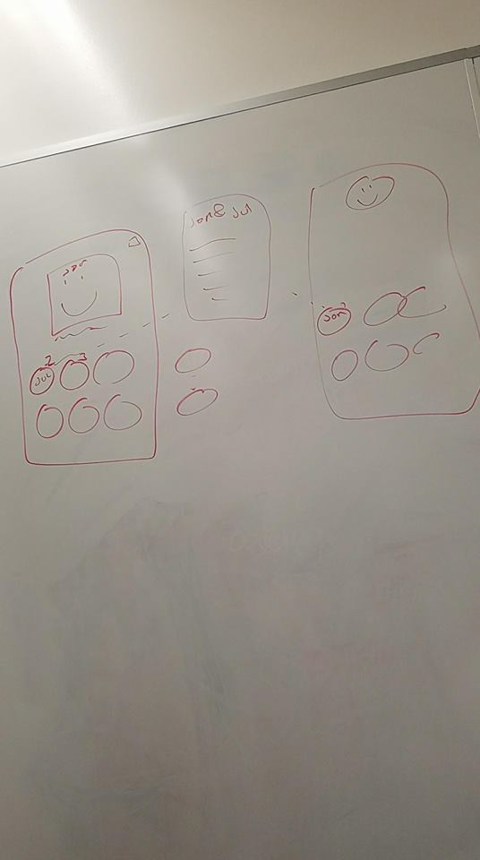
Front Page Mockup
This is an example of how the front page would look. This is the screen the
user will see until they sign in or sign up
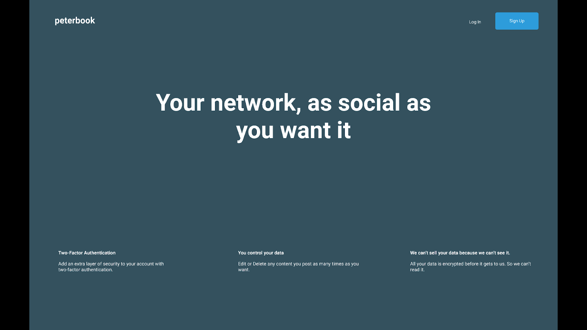
Sign Up Mockup
This is an example of a sign up screen.
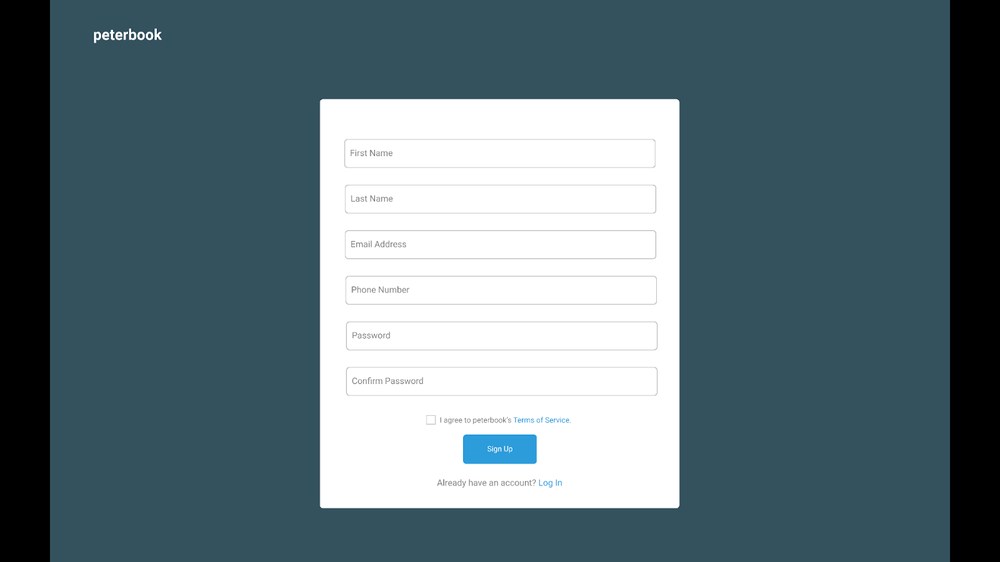
Sign In Mockup
This is an example of the sign in screen
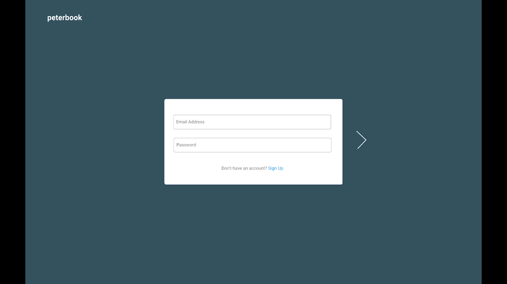
Two Factor Authentication Mockup
We wanted to use two factor authentication to promote security.
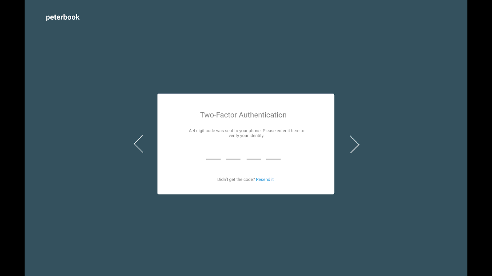
Main Page Mockup
This is an example of the main page. We wanted it to feel similar to facebook
to help people feel more comfortable using the site, so we went with a similar layout.
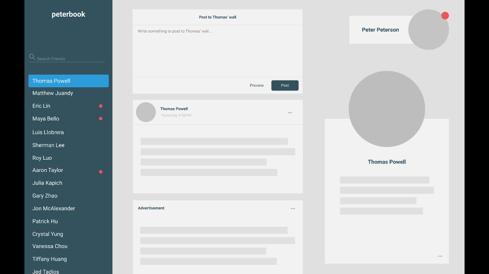
Main Page Popups Mockup
These are the popup windows for the buttons of the previous mockup.
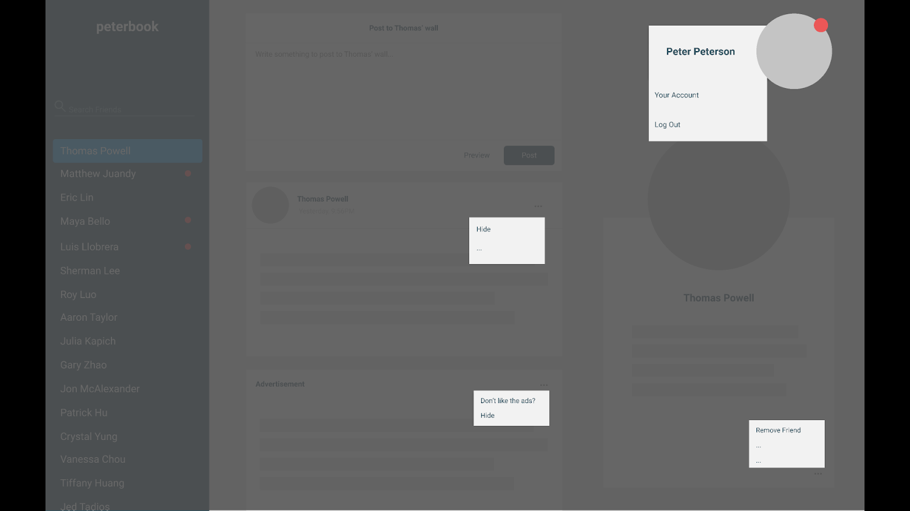
Main Page 2 Mockup
This is a second varient of the main page.
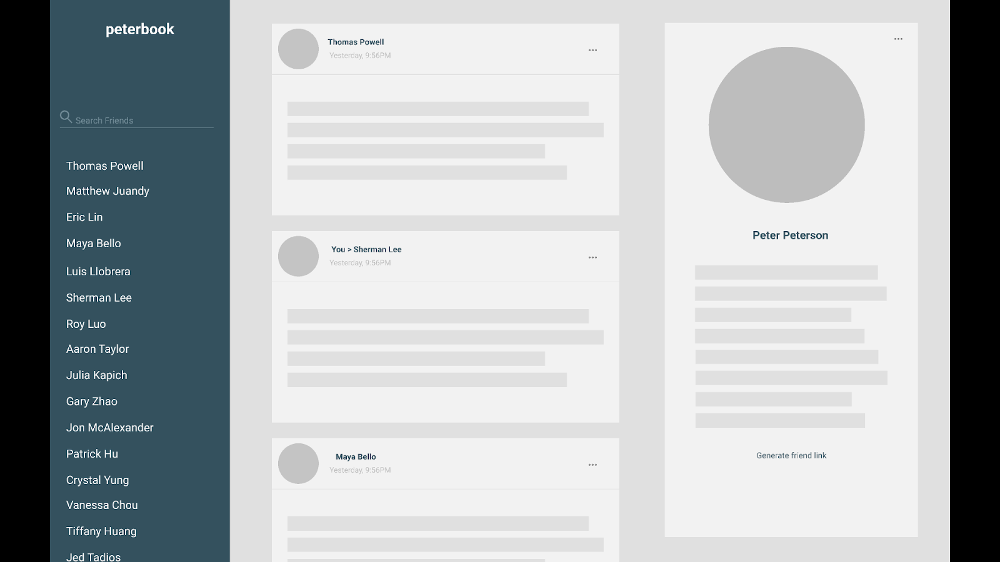
Main Page 2 Popups Mockup
These are the popup windows for the buttons of the previous mockup.
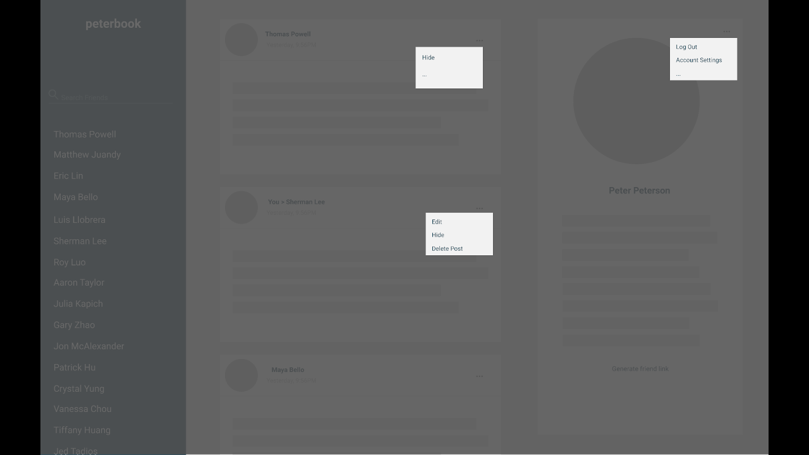
Add Friend Mockup
We are planning to use a direct link friend invite system, similar to how discord chats
let you add people. This makes the system feel more secure to the user.
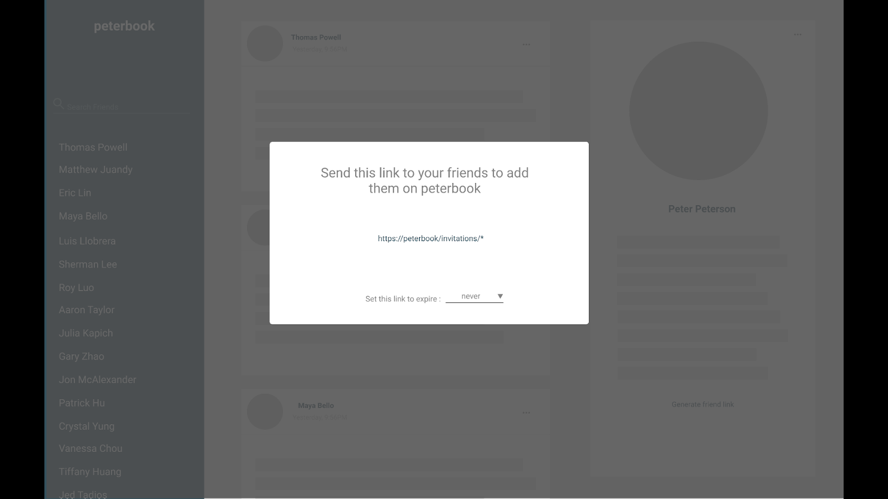
Mobile Main Page Mockup
This is a mockup of how the main page would look on a mobile device.
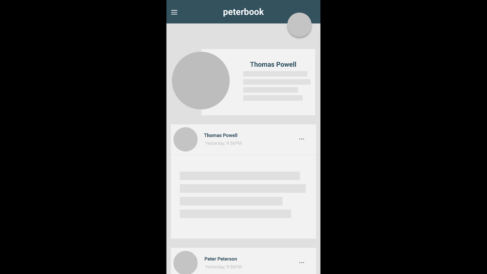
Mobile Friend Page Mockup
This is how the friends list would look on a mobile device. It is collapsible to make
sure that it doesn't clutter the user's screen since there is limited space on mobile.